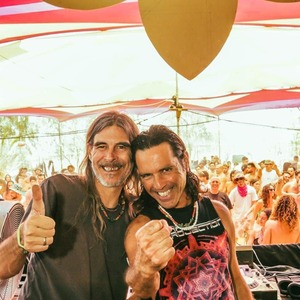
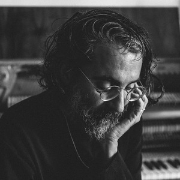
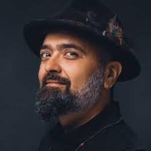
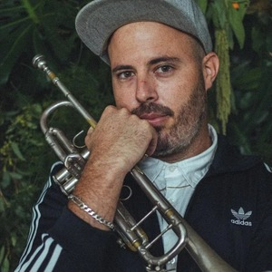
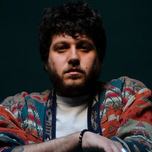
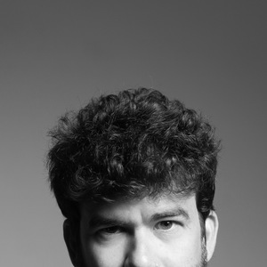
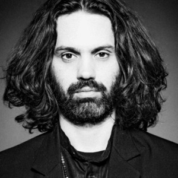

מרחב נשימה אורבני
מבית סול ת'רפי

סול ת'רפי מציגים את הפופ אפ "קלאוד ספייס", מרחב נשימה אורבני חדש ויחיד במינו בארץ, בקרית המלאכה, תל אביב, שיעבוד בחודשים יולי, אוגוסט וספטמבר. בתוך החיים הסוענים שבהם אנו חיים, הבנו את הצורך במרחב שונה, מיוחד, נקי, רגוע ומרחף.
החיים היום יומיים תחת יוקר המחיה, המצב הביטחוני הרעוע, רעש עירוני בלתי פוסק ועוד שלל משתנים, גורמים לרמות סטרס גבוהות שאנו סוחבים בגוף ובנפש בקצב הולך וגובר בשנים האחרונות.
מתוך תובנה זו, ולאחר עשרות סדנאות וריטריטים של מדיטציית סאונד במרחבים משתנים כגון סוזן דלל, מוזיאון תל אביב, הספרייה הלאומית ירושלים, MOA ועוד, הגענו למסקנה שזה הטיימינג הנכון לפתוח פופ-אפ שהוא מרחב לנשימה, הרפיה ותנועה.
בחודשים הקרובים נארח את האמנים המובילים בישראל לסשנים של מדיטציות סאונד עמוקות, המשלבות את כוחה המרפא של המוזיקה יחד עם עקרונות הזן-בודהיזם כדי לאפשר חלל להרפיה עמוקה, הזדמנות נדירה להיחשף לזרמים התת-קרקעיים ביצירתם של אמנים אהובים.
לרכישת כרטיסים - יולי 2026

לאירוע הפתיחה נארח את הרכב הטראנס הפסיכדלי האגדי, אסטרל פרוג'קשן, מחלוצי הסאונד האלקטרוני מישראל שכבשו את העולם. אבי ניסים וליאור פרלמוטר, הפועלים יחד עוד מימי פרויקט SFX ב-1989, הם דמויות מפתח ואחראים לכמה מההמנונים הנצחיים של ז'אנר הגואה והפסיי-טראנס, אשר עיצבו דורות של מאזינים ויוצרים ברחבי תבל. המוזיקה שלהם היא מסע קוסמי רב-שכבתי, המשלב מלודיות מהפנטות, מקצבים סוחפים ומרקמים צליליים עשירים. עם דיסקוגרפיה ענפה הממשיכה להתעדכן גם בשנים האחרונות, אסטרל פרוג'קשן מובילים קהלים עצומים בפסטיבלים ואירועים ברחבי העולם, תוך שהם חוקרים בעקביות את העוצמה של הסאונד ליצירת חוויות סוחפות במרחב. הם ינגנו סט אמביינט מיוחד ונדיר.

מוזיקאי, פסנתרן ומפיק שיצירותיו זכו להכרה בינלאומית גורפת עם עשרות מיליוני האזנות ומיליוני מאזינים חודשיים בפלטפורמות הסטרימינג. רז פיתח שפה מוזיקלית מינימליסטית ומובחנת המשלבת פסנתר, סאונדסקייפס ומרחבים אלקטרוניים אטמוספריים. הוא מוביל מיצגים אודיו-ויזואליים עמוקים, ויצירתו נשענת על מרבדי אמביינט מורכבים המייצרים השתקפות של שקט פנימי והקשבה עמוקה בלב המרחב האורבני.

מהדיג'ייז והמפיקים המרכזיים והמשפיעים בסצנת הטראנס בישראל. דרוויש פיתח לאורך עשורים שפה מוזיקלית ייחודית המשלבת בין פסיכדליק ופרוגרסיב טראנס לבין אלמנטים שורשיים של מוזיקת עולם ומקצבים אורגניים. הוא מתייחס אל מרחבי ההאזנה כאל מרחב של שחרור תודעתי ואיחוד אנרגטי, ומוביל מסע סאונד היפנוטי, עמוק ושבטי שמחבר את המאזין אל קצב פעימות הלב הבסיסי ביותר.

נארח את ספי ציזלינג, מהחצוצרנים, המלחינים והיוצרים המוערכים והמשפיעים ביותר בסצנת הג'אז, ה-Afrobeat והמוזיקה השחורה העכשווית בישראל. ציזלינג, ששחרר את אלבום הבכורה שלו בקולקטיב המוזיקלי המוביל Raw Tapes וחתום כיום בלייבל הבריטי הנחשב Tru Thoughts, מוכר בזכות חתימת סאונד חמה, אנלוגית ורוחנית במיוחד, הנגינה שלו בחצוצרה היא צינור להעברת רגש חשוף, אוויר ונשימה. במרחב המדיטטיבי, ציזלינג מייצר מרבדי ג'אז רוחני (Spiritual Jazz) עשירים, השוזרים מלודיות נוסטלגיות עם אלתור חופשי ומזמינים את הקהל לצלילה עמוקה.
נארח את קארין קימל, סלקטורית ואמנית מולטידיסציפלינרית מוערכת, הפועלת בתחומי האנימציה, האמנות הפלסטית והמיצב. קימל, שעבדה עם מותגים וגופים בינלאומיים ומקומיים מובילים - בהם Porsche, Deezer, Dekmantel, מוזיאון תל אביב, Sonar+D ומכון ויצמן למדע - מביאה עמה אל מרחב ההאזנה ראייה אסתטית ואוצרותית יוצאת דופן. היא מייצרת חיבור בין חזון ויזואלי מובהק לבין בניית מרחבים אטמוספריים ומסעות מוזיקליים אקלקטיים, המזמינים את השוכבים בחלל לנתק את רעשי הרקע ולצלול אל חוויית הקשבה טוטאלית ומעוררת דמיון.

מפיק מוזיקלי וממייסדי קולקטיב וחברת התקליטים המשפיעה Raw Tapes, המהווה דמות מרכזית בסצנת הביטים התל-אביבית וחלק מההרכב Buttering Trio. כיוצר שאלבומיו ראו אור בלייבל הלוס-אנג'לסי האגדי Stones Throw Records, חבקין נחשב למדען סאונד ומאסטר של סינתסייזרים ומקלדות. יצירתו נעה בציר שבין היפ-הופ קוסמי, ג'אז עתידני ואמביינט, ומאופיינת בנבירה אינסופית בטקסטורות צליל חמות. ריג'ויסר מביא אל המרחב את היכולת לטוות מרבדי סאונד אנלוגיים מורכבים ורחבי יריעה, המזמינים להתמסרות מוחלטת לצליל.
נארח את אייל תלמודי, מוזיקאי וירטואוז, סקסופוניסט, קלרניתן, מלחין ומפיק מהפנט, החתום על אינספור פרויקטים מכוננים במוזיקה הישראלית והבינלאומית (מלהקת Malox ועד חברות בהרכבים Balkan Beat Box ו-Oy Division, לצד שיתופי פעולה עם אמנים כברי סחרוף). תלמודי ידוע באנרגיה הגולמית והבלתי מתפשרת שלו, ומביא עמו הבנה עמוקה של כוחו של כלי הנשיפה כהרחבה ישירה של הנפש והרוח. במפגש האינטימי, תלמודי פושט את המקצבים המהירים וצולל אל חקר האוברטונים (צלילים עיליים), הדהוד החלל והאוויר החשוף, ומייצר חוויית האזנה טוטאלית והיפנוטית.
נארח את יוסי פיין, מהבסיסטים והמפיקים המוזיקליים המשפיעים והמוערכים בישראל ובעולם. הקריירה הבינלאומית הענפה של פיין, שהיה מועמד לפרס הגראמי, כוללת עבודה צמודה עם אגדות רוק כמו דיוויד בואי ולו ריד, וענקי ג'אז כמו גיל אוונס וסטנלי ג'ורדן, לצד הפקת אלבומים מכוננים בזירה המקומית דוגמת להקת "הדג נחש". פיין הוא אמן שמבין סאונד, תדר ומקצב לעומקם הפיזי והאולפני. הוא מגיע אלינו כדי לחלוק את הידע המצטבר והתחושה הייחודית לו, ולהוביל מסע מדיטטיבי דרך צלילים נמוכים ומרקמי בסיס עמוקים.
נארח את אסף אמדורסקי, מהיוצרים המרכזיים, הוותיקים והמוערכים ביותר במוזיקה וביצירה האלקטרונית בישראל. מאז תחילת שנות התשעים, אמדורסקי פרץ דרכים בעקביות וחוקר את גבולות הסאונד, תוך שילוב עולמות של רוק, פופ ואלקטרוניקה חדשנית. אלבומיו הפכו לאבני דרך תרבותיות בזכות ההפקות המתוחכמות, העבודה האולפנית הקפדנית והאווירה המהפנטת והייחודית להן. הוא ידוע ביכולתו ליצור עולמות מוזיקליים שלמים המשלבים מרקמים עשירים, ועובר אל המרחב המדיטטיבי כדי לייצר חוויה המבוססת על הקשבה אקטיבית, מרחב אטמוספרי עמוק ושחרור תודעתי מלא.
נארח את עמרי סמדר, DJ, מפיק ומוזיקאי בעל רקע נרחב במוזיקה קלאסית וג'אז, המהווה אחד מהיוצרים האלקטרוניים המצליחים והעסוקים ביותר בישראל. סמדר פיצח נוסחה ייחודית של מיזוג קלאסיקות אייקוניות ושורשים מוזיקליים יחד עם הפקה אלקטרונית עדכנית הוא מוביל מסעות אלקטרוניים בעלי אופי מדיטטיבי והיפנוטי ארוך, שבהם הוא פורש מרבדי סאונד שבהם לכל צליל קטן, תו ותנועה יש משמעות מכוונת. עמרי, מאמני הבית של סול ת'רפי מגיע אלינו הישר מטור בינלאומי ראשון.

נארח את יונתן דסקל, אמן סינתיסייזר, פסנתרן, מלחין ומפיק ייחודי, הנחשב לאחד מהקלידנים והמפיקים העסוקים ביותר בישראל, הפועל בין היתר בפרויקט THE MOON ובשיתוף פעולה עם לייבל Raw Tapes. דסקל מוביל מסעות צלילים ומפגשי מקלדות וקלידים הנעים על הציר שבין שקט מוחלט לעוצמות הרמוניות מורכבות. המופע שלו מייצר חלל העוטף את הקהל באלקטרוניקה אמביינטית דינמית, תוך חקר פנימי של תפיסת זמן, ומזמין לצלילה תודעתית נקייה מהסחות דעת.
נארח את אנה הלטה, מהדמויות המרכזיות והמוערכות ביותר בסצנת הטכנו והאנדרגראונד בישראל וממייסדות קולקטיב פקוטק (Pacotek). עם ניסיון של למעלה משני עשורים מאחורי העמדה במועדונים ובפסטיבלים הנחשבים ביותר בארץ ובעולם, אנה מובילה קו מוזיקלי ייחודי, עמוק ובלתי מתפשר. הסטים שלה הם מסעות סוחפים אל מחוזות הטכנו האיכותי וההיפנוטי, שבהם היא אורגת במיומנות צלילים ותדרים המאתגרים את התודעה ומזמינים להתמסרות מלאה, תוך ניקוי רעשי הרקע של הנפש.

נארח את שי בן צור, מוזיקאי, מלחין ומפיק בינלאומי יוצא דופן, היוצר גשר מוזיקלי ורוחני נדיר בין המוזיקה הסופית המסורתית (קוואלי), שירה מקודשת בעברית ומסורות קלאסיות מהודו. בן צור, שחי ופעל בהודו לאורך שנים, זכה לשבחים מקיר לקיר ולהכרה עולמית, בין היתר בזכות אלבומו המופתי "Junun" (ג'ונון) – שיתוף פעולה חוצה גבולות עם גיטריסט להקת רדיוהד ג'וני גרינווד והרכב "הרג'סטאן אקספרס". המוזיקה של בן צור היא מסע מהפנט אל עמקי הנפש, השוזר מלודיות עשירות, מקצבים מהפנטים ותדרים של אהבה וחיבור רוחני. במפגש הלייב במרחב "קלאוד", יפשט בן צור את המרחקים התרבותיים והמוזיקליים ויבנה סשן המותאם במיוחד להרפיה עמוקה, שבו השוכבים בחלל יוכלו להתמסר לצלילים האורגניים, למצוא מרחב נשימה נקי ולצלול אל חוויית הקשבה טוטאלית ומרוממת רוח.
FAQ